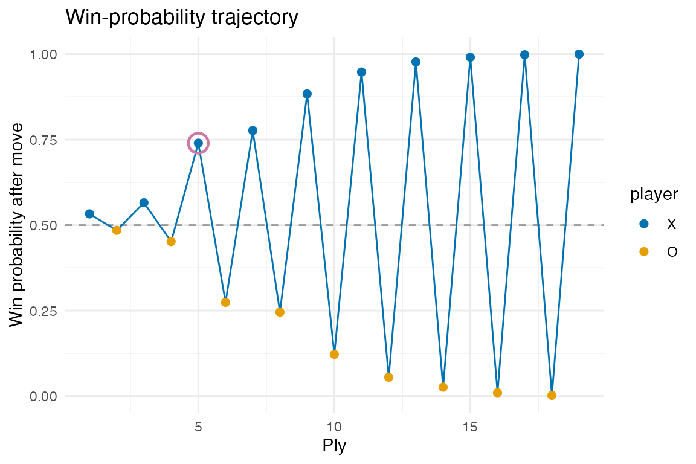

Self-play and opening statistics
sim <- tsr_simulate("random", "random", n_games = 10L, seed = 1L, verbose = FALSE)
sim
#> # A tibble: 10 × 10
#> game_id policy_x policy_o winner n_moves first_move first_move_i first_move_j
#> <int> <chr> <chr> <int> <int> <int> <int> <int>
#> 1 1 random random 2 100 249 0 2
#> 2 2 random random 1 81 107 2 2
#> 3 3 random random 2 98 174 1 3
#> 4 4 random random 1 55 31 2 3
#> 5 5 random random 1 141 103 2 1
#> 6 6 random random 2 82 47 2 3
#> 7 7 random random 2 44 87 2 1
#> 8 8 random random 1 85 115 2 0
#> 9 9 random random 1 85 112 3 3
#> 10 10 random random 1 129 211 2 0
#> # ℹ 2 more variables: first_move_k <int>, first_move_l <int>
os <- tsr_opening_stats(sim, by = "first_move")
head(os, 5)
#> # A tibble: 5 × 7
#> first_move n_games win_rate_x win_rate_o draw_rate ci_lo ci_hi
#> <int> <int> <dbl> <dbl> <dbl> <dbl> <dbl>
#> 1 31 1 1 0 0 0.207 1
#> 2 47 1 0 1 0 0 0.793
#> 3 87 1 0 1 0 0 0.793
#> 4 103 1 1 0 0 0.207 1
#> 5 107 1 1 0 0 0.207 1Larger runs (thousands of games) would expose real first-move structure. Pure-R self-play is intentionally the throughput ceiling for this release; Rcpp acceleration is a future enhancement.
Single-game analysis
game <- tsr_play_game("greedy", "random", seed = 7L)
analysis <- tsr_analyze_game(game)
tail(analysis, 6)
#> # A tibble: 6 × 17
#> ply player cell i j k l win_prob_before win_prob_after
#> <int> <int> <int> <int> <int> <int> <int> <dbl> <dbl>
#> 1 14 2 22 1 1 1 0 0.0227 0.0258
#> 2 15 1 16 3 3 0 0 0.974 0.991
#> 3 16 2 233 0 2 2 3 0.00915 0.00964
#> 4 17 1 14 1 3 0 0 0.990 0.998
#> 5 18 2 130 1 0 0 2 0.00190 0.00200
#> 6 19 1 6 1 1 0 0 0.998 1
#> # ℹ 8 more variables: delta <dbl>, best_cell <int>, best_delta <dbl>,
#> # regret <dbl>, is_best <lgl>, missed_win <lgl>, missed_block <lgl>,
#> # is_turning_point <lgl>
tsr_plot_winprob(analysis)
tsr_turning_points(analysis)
#> # A tibble: 1 × 17
#> ply player cell i j k l win_prob_before win_prob_after
#> <int> <int> <int> <int> <int> <int> <int> <dbl> <dbl>
#> 1 5 1 2 1 0 0 0 0.548 0.740
#> # ℹ 8 more variables: delta <dbl>, best_cell <int>, best_delta <dbl>,
#> # regret <dbl>, is_best <lgl>, missed_win <lgl>, missed_block <lgl>,
#> # is_turning_point <lgl>
tsr_game_summary(game)
#> # A tibble: 1 × 10
#> winner n_moves n_missed_wins_x n_missed_wins_o n_missed_blocks_x
#> <int> <int> <int> <int> <int>
#> 1 1 19 6 0 0
#> # ℹ 5 more variables: n_missed_blocks_o <int>, mean_regret_x <dbl>,
#> # mean_regret_o <dbl>, n_turning_points <int>, decisiveness <dbl>Comparing policies
games_r <- lapply(1:4, function(s) tsr_play_game("random", "random", seed = s))
games_g <- lapply(1:4, function(s) tsr_play_game("greedy", "random", seed = s))
p_random <- tsr_behavior_profile(games_r, side = 1L, label = "X random")
p_greedy <- tsr_behavior_profile(games_g, side = 1L, label = "X greedy")
tsr_compare_profiles(p_random, p_greedy)
#> # A tibble: 2 × 11
#> label side n_games n_moves_total accuracy mean_regret blunder_rate
#> <chr> <int> <int> <int> <dbl> <dbl> <dbl>
#> 1 X random 1 4 177 0 0.376 0.870
#> 2 X greedy 1 4 96 0.125 0.0197 0.0833
#> # ℹ 4 more variables: win_conversion <dbl>, defense_rate <dbl>,
#> # aggression <dbl>, mean_decisiveness <dbl>